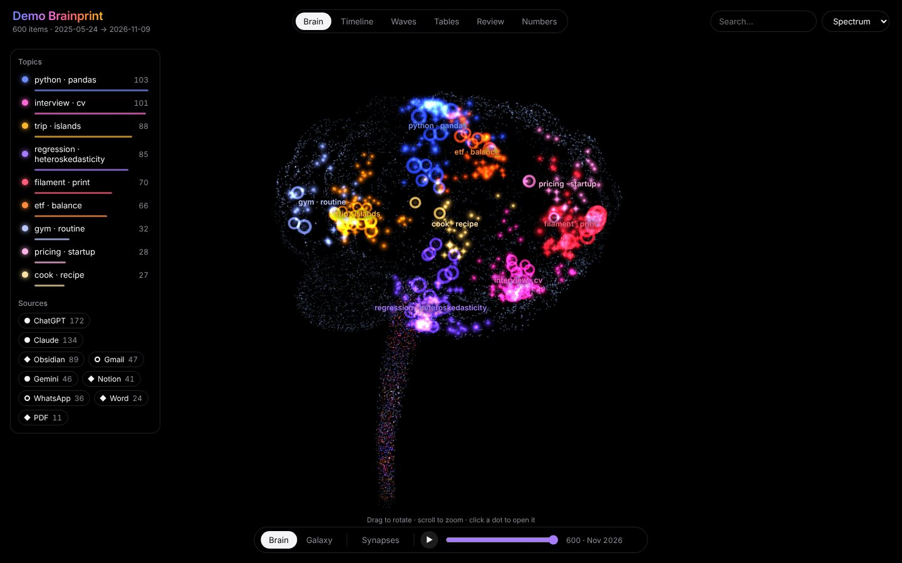
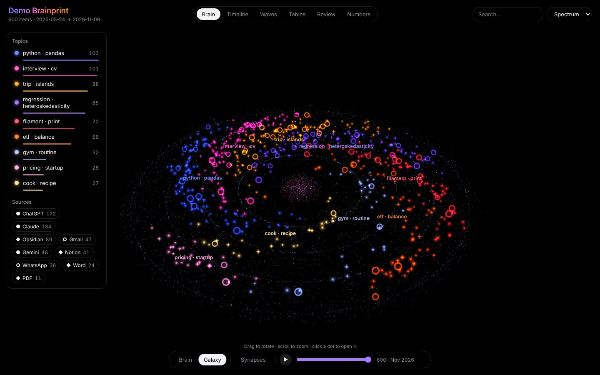
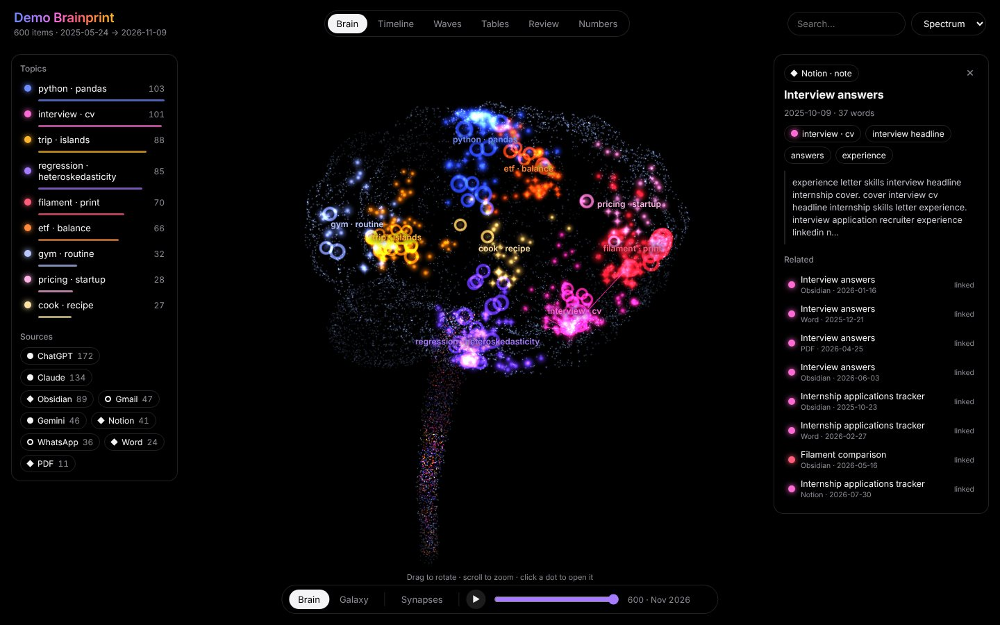
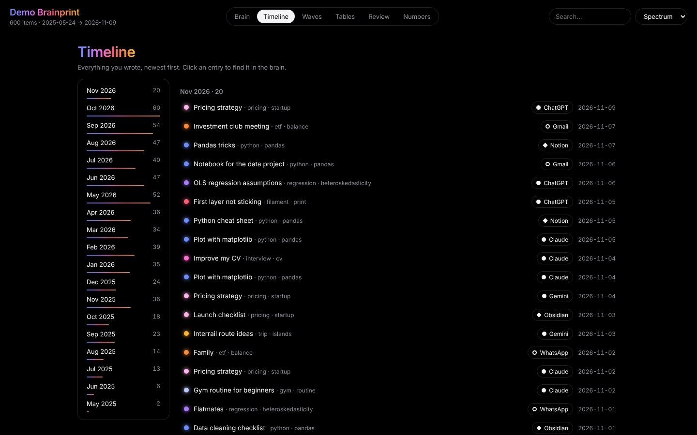
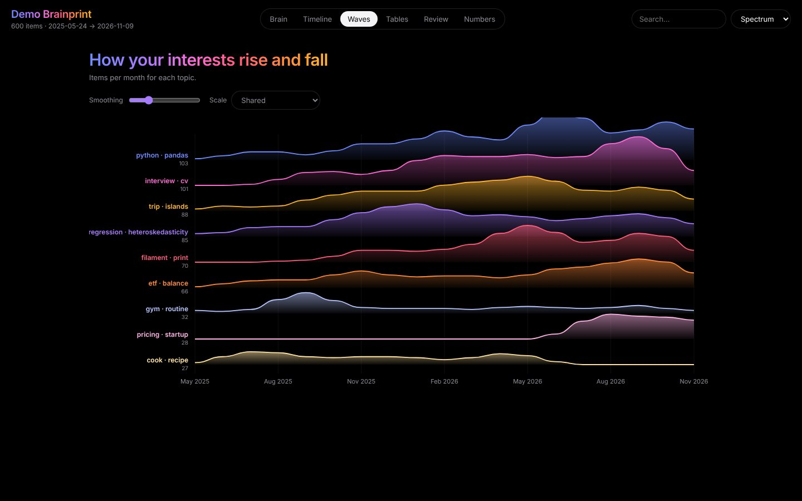
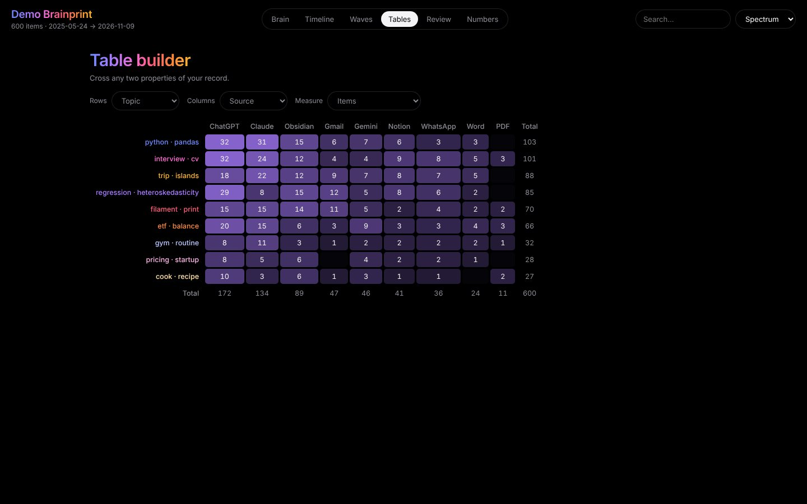
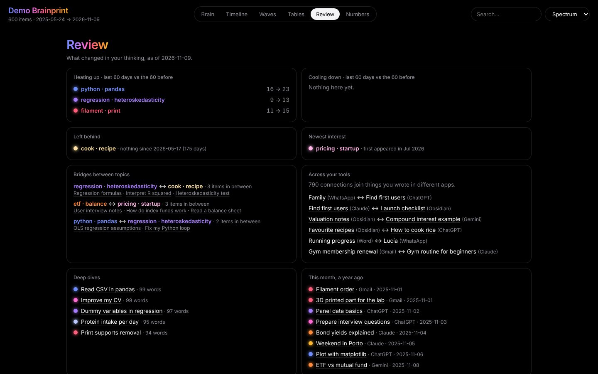
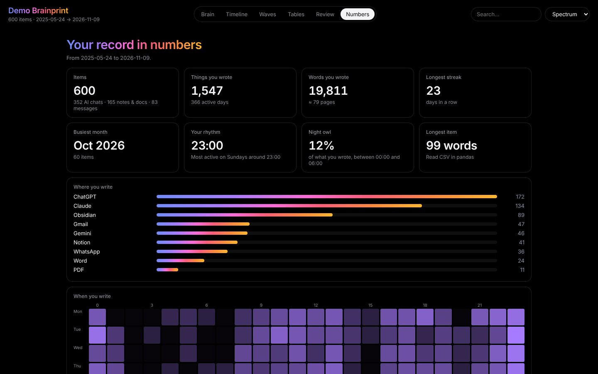

contextrecallremember
pip install "brainprint[agent]"
brainprint brain ~/Vault
brainprint mcp --brain ~/Vault chatgpt.zip Sent.mbox{
"mcpServers": {
"brainprint": {
"command": "brainprint",
"args": ["mcp", "--brain", "/path/to/Vault", "/path/to/chatgpt.zip"]
}
}
}- ChatGPT
- Claude
- Gemini
- Obsidian
- Notion
- Gmail








-
git clone https://github.com/juanmariarodriguez2-png/brainprint cd brainprint pip install . brainprint app -
brainprint build chatgpt.zip ~/Vault Sent.mbox --me you@gmail.com -o my_brain.html -
brainprint sync --init ~/Vault ~/Downloads/brainprint-capture.json -o my_brain.html brainprint sync --watch -
brainprint build chatgpt.zip ~/Vault --vault ~/Vault